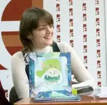

Народилася 29 квітня 1979 року у Львові.
Закінчила філологічний факультет Львівського національного університету, працювала редактором літературної програми Львівського радіо і передачі для дітей. Зараз працює в Інтернет-виданні ZAXID.NET, разом з чоловіком виховує доньку Вікторію. Найбільше захоплення – література, а також – класична музика і живопис. Не уявляє собі життя без книжок – воно було б безбарвним і нудним. Виходом першої власної книжечки "Про Зайчика-Забудька та інші історії" завдячує донечці, для якої насамперед її і писала. Вікторія долучилася також до ілюстрування книжки, оскільки дуже любить малювати, а особливо – малювати зайчиків. Донечка – перший слухач і критик, а головне – найбільше джерело життєвої енергії і сонячного сприйняття світу. Лауреат ІІ премії Всеукраїнського конкурсу на найкращі прозові твори для дітей "Золотий лелека" 2008 року. Співавтор книжки "Різдвяна чудасія" та "Весняної книжки" видавництва "Братське". Переможець конкурсу "Біблійні історії" в номінації "Повість на сюжет з Євангелії" за повість "Ісус у Капернаумі" (1 місце) і в номінації "Оповідання на сюжет з Євангелії" за оповідання про Рахіль і Ослика "Вхід Господній в Єрусалим" (2 місце).